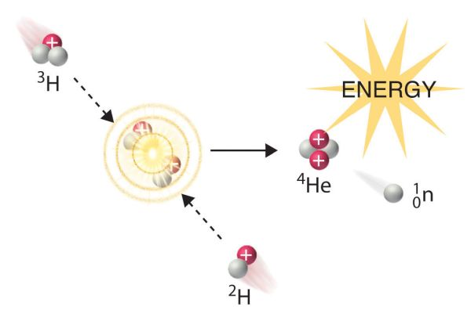

19 Nuclear Chemistry

1. The Nature of Nuclear Reactions
Atomic Number (Z): The number of protons in nucleus.
Mass Number (A): The number of protons and neutrons in nucleus.
An atom X with atomic number Z and mass number A can be expressed as:
\[\ce{^{A}_{Z}X}\]
Two types of nuclear reactions:
- Radioactivity Decay is spontaneous decay of unstable nuclei during which process particles and/or electromagnetic radiation are emitted.
- Nuclear Transmutation results from the bombardment of nuclei by neutrons, protons, or other nuclei.
Balancing Nuclear Equations
- Mass number conservation;
- Charge conservation.
Comparison of chemical reactions and nuclear reactions. The most important difference is chemical reactions do not break atoms while nuclear reactions do.
Example: The nuclide \(\ce{^{125}_{53}I}\) combines with an electron and produces a new nucleus and no other massive particles. What is the equation for this reaction?
Answer:
(1) An electron would not change the mass number of the atom, so the mass number of the new atom should be \(125+0=125\);
(2) The charge must be balanced before and after the reaction, so the atomic number of the new atom should be \(53+(-1)=52\);
(3) The 52nd element is Te.
\[\begin{align*} \ce{^{125}_{53}I + ^0_{-1}e -> ^{125}_{52}Te} \end{align*}\]
Example: The reaction of an \(\alpha\) particle with magnesium-25 (\(\ce{^{25}_{12}Mg}\)) produces a proton and a nuclide of another element. Identify the new nuclide produced.
Answer:
\[\begin{align*} \ce{^{25}_{12}Mg + ^4_2He -> ^1_1H + ^{28}_{13}Al} \end{align*}\]
Nuclear Stability
- Certain numbers (2, 8, 20, 50, 82, or 126) of neutrons and protons are more stable than others.
- Nuclei with even numbers of both protons and neutrons are generally more stable than those with odd numbers of these particles.
- All isotopes of the elements with atomic numbers higher than 83 are radioactive. All isotopes of Tc and Pm are radioactive.
Nuclear Binding Energy: The energy required to break up a nucleus into its component protons and neutrons.
Example \(\ce{^19_9F}\) contains 9 protons, 10 neutrons and 9 electrons. The mass of 9 protons, 10 neutrons and 9 electrons is
\[9\times 1.0073\,\text{amu}+10\times 1.0087\,\text{amu}+9\times0.00055\text{ amu}=19.15765\,\text{amu}\] The mass of a \(\ce{^19_9F}\) atom is \(18.9984\,\text{amu}\).
The difference in mass is associated with the energy required to break up a nucleus into its component protons and neutrons.
\[E=mc^2\] Thus \[\Delta E = (\Delta m)c^2\] In this example, \(\Delta m = -0.15925\,\text{amu}\) and \(\Delta E = -2.377\times 10^{-11}\,\text{J}\) per atom. For one mole atoms, \(\Delta E = -1.431\times 10^{10}\,\text{kJ/mol}\). The negative sign means the formation of the atom would release energy to the environment. Some textbooks do not include the negative sign but state the direction of energy flow in words.
Since there are 19 nucleons in one atom. The nuclear binding energy per nucleon is \(\Delta E = -2.377\times 10^{-11}/19 = -1.251\times 10^{-12}\,\text{J}\).
In nuclear science, MeV is widely used as the unit for energy. \(1\text{ MeV}=1.602\times10^{-13}\text{ J}\). Thus, the binding energy per \(\ce{^19_9F}\) atom is \(-148.4\text{ MeV}\)
Nuclei with larger nuclear binding energy per nucleon is more stable.
Example: Calculate the nuclear binding energy for the nuclide \(\ce{^56_26Fe}\) in (a) J per nucleus; (b) J per mole of nuclei; (c) MeV per nucleus; (d) MeV per nucleon. (The atomic mass of \(\ce{^56_26Fe}\) is 55.9349 amu.)
Answer:
(a)
\[\begin{align*}
\Delta M & = 55.9349\text{ amu}-26\times1.0073\text{ amu}\\
& -30\times1.0087\text{ amu}-26\times0.00055\text{ amu}\\
& = 55.9349\text{ amu} - 56.4651\text{ amu}\\
& = -0.5302\text{ amu}\\
\Delta E & = mc^2\\
& = -0.5302\text{ amu}\times\frac{1.6605\times10^{-27}\text{ kg}}{1\text{ amu}}\times(2.998\times10^8\text{ m/s})^2\\
& = -7.913\times10^{-11}\text{ J}
\end{align*}\]
(b) \[\begin{align*}
\Delta E = -7.913\times10^{-11}\text{ J}\times\frac{6.02\times10^{23}}{1\text{ mol}} = -4.76\times10^{13}\text{ J/mol}
\end{align*}\]
(c) \[\begin{align*}
\Delta E = -7.913\times10^{-11}\text{ J}\times\frac{1\text{ MeV}}{1.602\times10^{-13}\text{ J}}=-494\text{ MeV}
\end{align*}\] (d) \[\begin{align*}
\Delta E\text{ per nucleon} = \frac{-494\text{ MeV}}{56} = -8.82\text{ MeV/nucleon}
\end{align*}\]
Requirements
1. Understand the concepts;
2. Know how to balance a nuclear reaction equation;
3. Understand what is nuclear binding energy and its correlation with the nuclear stability.
2. Radioactive Decay
Radioactive Decay: The process by which the nucleus of an unstable atom loses energy by emitting radiation, including alpha particles, beta particles, gamma rays, and conversion electrons.
Types of radioactive decay
- Beta decay emits \(\beta\) ray which is a beam of electrons (\(\ce{^0_{-1}\beta}\) can be written as \(\ce{^0_{-1}e}\)); \[\ce{^14_6C -> ^14_7N + ^0_{-1}\beta}\]
- Positron decay emits positrons which are the antiparticles or the antimatter counterpart of the electrons (\(\ce{^0_{+1}\beta}\) can be written as \(\ce{^0_{+1}e}\)).
\[\ce{^11_6C -> ^11_5B + ^0_{+1}\beta}\]
- Electron capture decay;
\[\ce{^37_18Ar + ^0_{-1}e -> ^37_17Cl}\]
- Alpha decay emits \(\alpha\) ray wichi is a beam of \(\ce{^4_2He}\) nuclei;
\[\ce{^212_84Po -> ^4_2H3 + ^208_82Pb}\]
- Spontaneous fission. \[\ce{^252_98Cf -> 2^125_49In + 2^1_0n}\]
Kinetics of Radioactive Decay
Radiocarbon Dating Radiocarbon (\(\ce{^14C}\)) is constantly being created in the atmosphere by the interaction of cosmic rays with atmospheric nitrogen. The resulting radiocarbon combines with atmospheric oxygen to form radioactive carbon dioxide, which is incorporated into plants by photosynthesis; animals then acquire \(\ce{^14C}\) by eating the plants. When the animal or plant dies, it stops exchanging carbon with its environment, and from that point onwards the amount of \(\ce{^14C}\) it contains begins to decrease as the \(\ce{^14C}\) undergoes radioactive decay. Measuring the amount of \(\ce{^14C}\) in a sample from a dead plant or animal such as a piece of wood or a fragment of bone provides information that can be used to calculate when the animal or plant died. The older a sample is, the less \(\ce{^14C}\) there is to be detected, and because the half-life of \(\ce{^14C}\) is about 5,730 years, the oldest dates that can be reliably measured by radiocarbon dating are around 50,000 years ago.
\[\ce{^14_6C -> ^14_7N + ^0_{-1}\beta}+\gamma\]
Since this reaction is a first order reaction, the half-life is a constant value.
Example: A tiny piece of paper (produced from formerly living plant matter) taken from the Dead Sea Scrolls has an activity of 10.8 disintegrations per minute per gram of carbon. If the initial C-14 activity was 13.6 disintegrations/min/g of C, estimate the age of the Dead Sea Scrolls. (The half-life of C-14 is 5730 years:)
Answer:
The C-14 activity is proportional to its concentration. The information from the question tells the concentration of C-14 changed by a factor of 10.8/13.6 after this piece of paper was produced.
The decay of C-14 is a first order reaction. Thus, \[\begin{align*} t_{1/2}=\frac{\ln2}{k}\\ \ln\frac{c_0}{c}=kt \end{align*}\]
From the first equation we can calculate the reaction rate constant. From the second equation we can calculate the reaction time.
\[\begin{align*} k & =\frac{\ln2}{t_{1/2}}\\ & = \frac{\ln2}{5730\text{ y}}\\ & = 1.210\times10^{-4}\text{ y}^{-1}\\ t & = \frac{\ln\frac{c_0}{c}}{k}\\ & = \frac{\ln\frac{13.6}{10.8}}{1.210\times10^{-4}\text{ y}^{-1}}\\ & = 1.90\times10^3\text{ y} \end{align*}\]
Thus, we can conclude that this piece of paper was produced around 1900 years ago.
Requirements
1. Understand what are alpha decay and beta decay;
2. Understand how to date a sample knowing the amount of \(\ce{^14C}\) it contains. Use the method discussed in Chapter 14 Chemical Kinetics.
3. Nuclear Fission and Nuclear Fusion
Nuclear Fission is the process in which a heavy nucleus (mass number > 200) divides to form smaller nuclei of intermediate mass and one or more neutrons.
Example
\[\ce{^235_92U + ^1_0n -> ^90_38Sr + ^143_54Xe + 3^1_0n}\]
In this process, one neutron is captured while three neutrons are produced. The resulting neutons can trigger further reactions. This property makes possible a nuclear chain reaction, which is a self-sustaining sequence of nuclear fission reactions.
For such a chain reaction to occur, enough uranium-235 must be present in the sample to capture the neutrons generated in the fission reaction. Otherwise, many of the neutrons will escape from the sample and the chain reaction will not occur. In this situation, the mass of the sample is said to be subcritical. When the amount of the fissionable material is equal to or greater than the critical mass, the minimum mass of fissionable material required to generate a self-sustaining nuclear chain reaction, most of the neutrons will be captured by uranium-235 nuclei, and a chain reaction will occur.
Atomic Bomb Two separated pieces of U-235 at subcritical masses. When triggered, those two pieces are pushed to merge and exceed the critical mass. Then chain reaction happens to cause explosion.
Nuclear Reactors Several pieces of U-235 at subcritical masses. Nuclear fission happens mildly without causing explosion. Control rods are used to adjust the reaction speed.
Nuclear Fusion is the combining of small nuclei into larger ones. Fusion reactions take place only at very high temperatures.
Examples
Reactions happen in the Sun.
\[ \begin{align*} & \ce{^1_1H +^2_1H -> ^3_2He} \\ & \ce{^3_2He + ^3_2He -> ^4_2He + 2^1_1H} \\ & \ce{^1_1H + ^1_1H -> ^2_1H + ^0_{+1}\beta} \end{align*} \]
Reactions happen in a Hydrogen Bomb
\[ \begin{align*} & \ce{^6_3Li +^2_1H -> 2^4_2\alpha} \\ & \ce{^2_1H + ^2_1H -> ^3_1H + ^1_1H} \end{align*} \]
Requirements
1. Know what are nuclear fission and fusion;
2. Understand what is critical mass and what is chain reaction;
3. Be familiar with above examples.
Practice Questions
Predict the other product of the following nuclear transformation. \[\ce{^6_3Li + ^1_0n -> ? + ^4_2He}\]
What are \(\alpha\) particles? What are \(\beta\) particles?
Calculate the nuclear binding energy for the nuclide \(\ce{^16_8O}\) in (a) J per nucleus; (b) J per mole of nuclei; (c) MeV per nucleus; (d) MeV per nucleon. (The atomic mass of \(\ce{^16_8O}\) is 15.9949 amu.)
Charcoal found under a stone at Stonehenge, England, has a carbon-14 activity that is 0.48 that of new wood. How old is the charcoal? (The half-life of carbon-14 is 5730 years.)
Copyright
Copyright(C) 2022 Yu Wang

This work is licensed under a Creative Commons Attribution 4.0 International License.